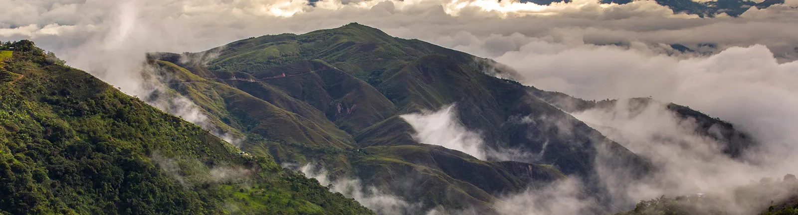
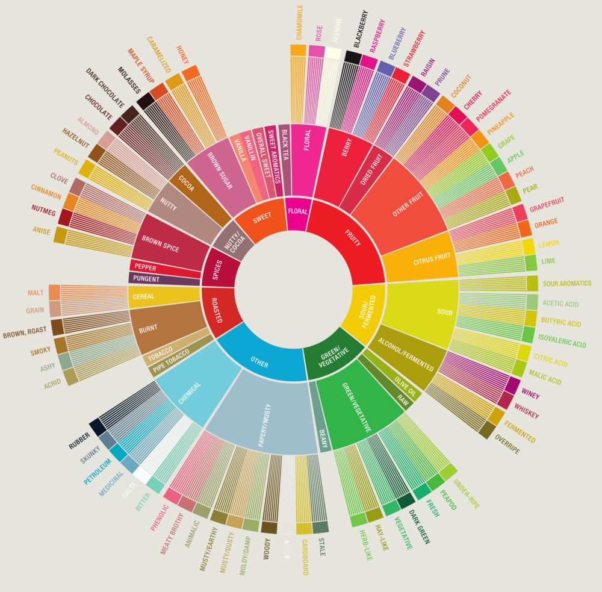
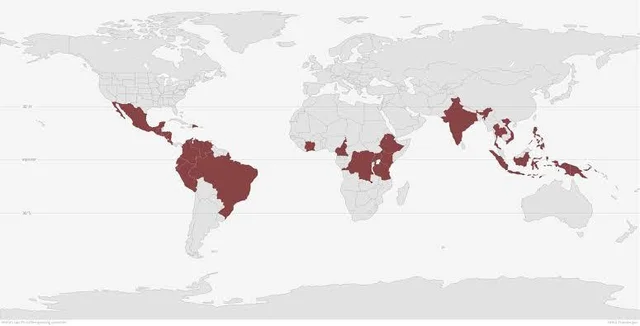
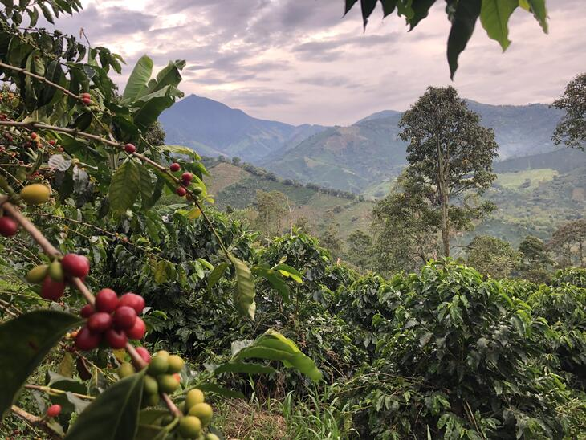
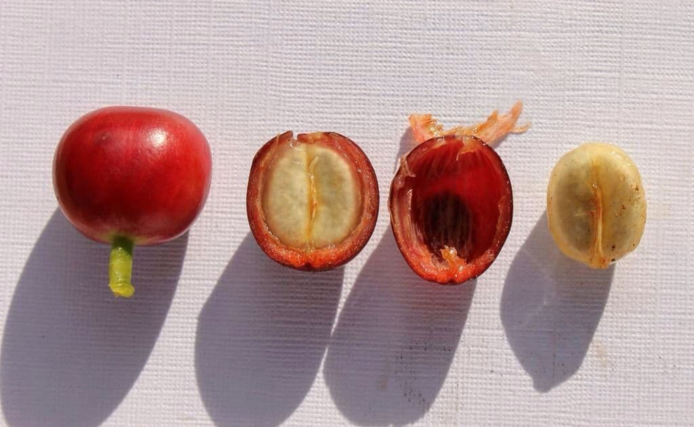

<body class="bg-info">
	<div class="container  mt-3 mb-3">
		
		<div class="row text-center">
			<div class="col-md-3">
				
				
			</div>	
			<div class="col-md-6">	
				<h4 style="color:#706762;"><u>About Us</u></h4>	
				<p>Round Mountain Coffee began in 2016 with a vision to pursue excellence in coffee, 
					to love our craft, and to serve our community. We source and roast all of our coffee ourselves. 
					There are a few advantages to this, but the main advantage is that we have control over the 
					quality of our product. This guarantees that your coffee will be fresh and delicious.<p>
				<h4 class="pt-2" style="color:#706762;"><u>About Coffee</u></h4>		
				<p>Coffee and it's flavor are impacted by many factors, including growing elevation, 
					soil composition, and cross-pollination. This is what we call the "terrior" of the coffee. 
					Flavor is also impacted by how the coffee is processed, stored, and finally, how it is roasted.
					Coffees can be processed in a variety of ways, and this refers to how the coffee cherries are 
					dried and prepared at the farm. Although there are many ways, the two most common are "natural"
					and "washed". A naturally processed coffee is allowed to dry in the sun with it's mucilage intact.
					This creates fermentation within the bean. Natural coffees, generally, are sweeter. Washed
					coffees, on the other hand, have the mucilage washed off before they are dried. This
					creates flavor that is more complex. </p>
			</div>
			<div class="col-md-3">
				
				
			</div>	
		</div>
	</div>
</body>